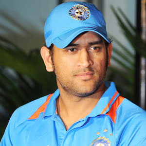
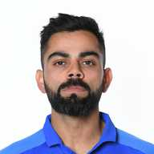
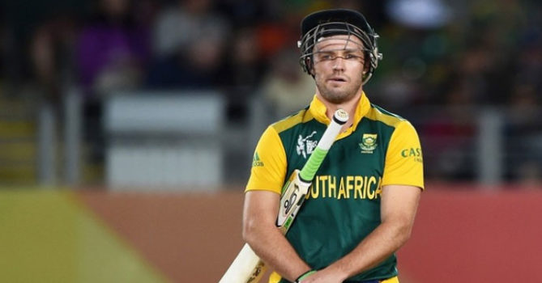
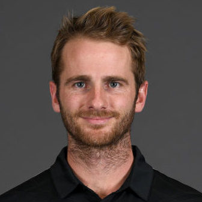
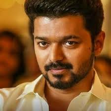
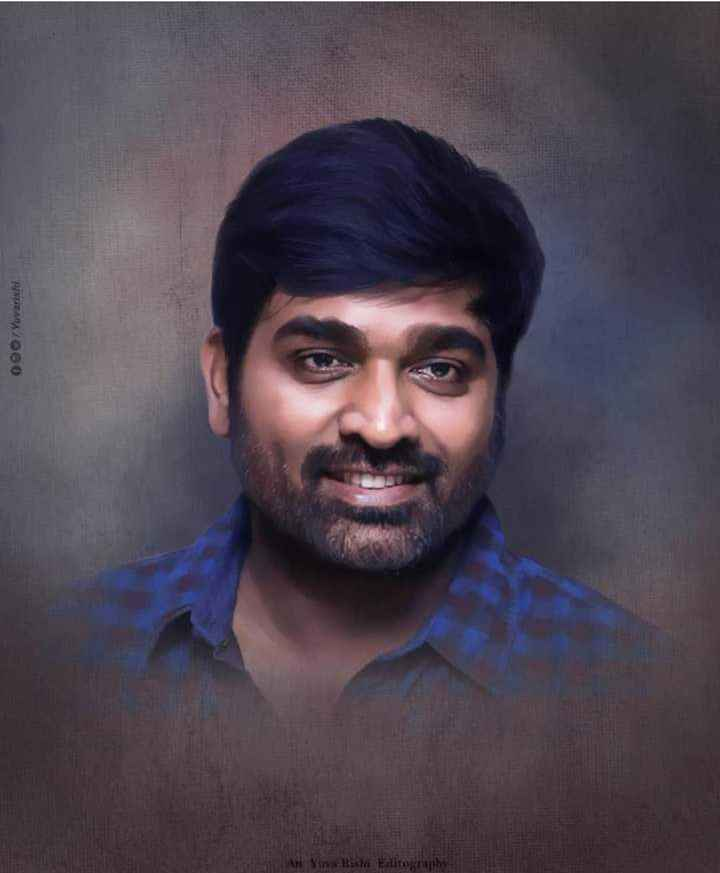

|  | Mahendra Singh Dhoni was born on July 7, 1981, in Ranchi, Bihar (now in Jharkhand), into a Rajput family originally from Uttarakhand. ... He attended DAV Jawahar Vidya Mandir located at Shyamali in Ranchi, Jharkhand. He was an athletic student, but was more interested in badminton and football initially. |
 | Virat kholi,the epitome of aggressive sportsmanship, was born on November 5, 1988, in Delhi into a Punjabi family. His father, Prem Kohli, worked as a criminal lawyer and his mother, Saroj Kohli, is a housewife. He has an elder brother, Vikash, and an elder sister, Bhavna. |
|  | AB de villiers is a South African cricketer, born on 17 February 1984. His full name is Abraham Benjamin de Villiers. He is a right-handed wicket-keeper batsman. |  | Kane Stuart Williamson (born 8 August 1990) is a New Zealand international cricketer who is currently the captain of the New Zealand national team in all formats. He is a right-handed batsman and an occasional off spin bowler. Williamson made his first-class cricket debut in December 2007 |
|  | Vijay was born on 22 June 1974 as Joseph Vijay in Madras (now Chennai). His father S. A. Chandrasekhar is a Tamil film director and his mother Shoba is a playback singer and carnatic vocalist. ... Vidhya's story is depicted in the 2005 film Sukran, in which Vijay played an extended cameo. |
 | vijay sethupathi was born in Rajapalayam, Virudhunagar district and did his education in Chennai. He graduated with a B.Com degree, following which he worked for three years as an accountant in Dubai, UAE. Unhappy with his job, he returned to India in 2003 and he himself motivated to pursue an acting career | .